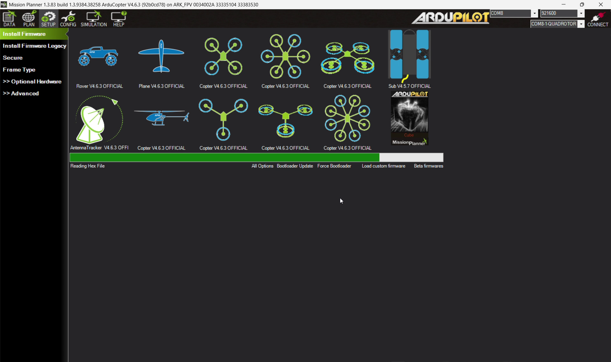
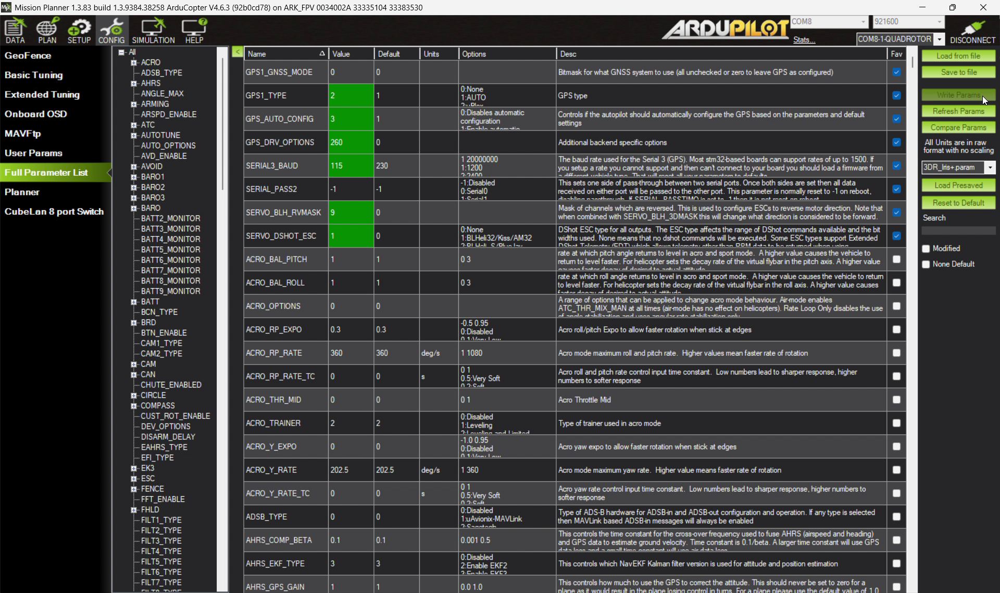
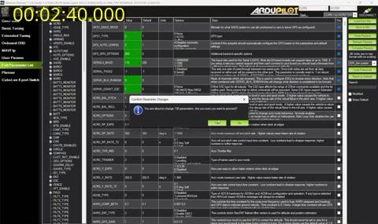
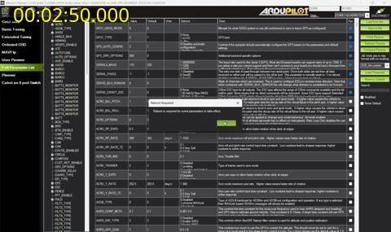

Task 12: Install firmware and load parameter file
Install ArduCopter firmware on the flight controller, then load the faculty-issued parameter file.
Parts required
- Vehicle with the FC, ESC, and camera/GPS mount installed
Tools required
- USB-C cable
- PC running Mission Planner
Part A. Install firmware
- Connect the USB-C cable between the PC and the flight controller.
- Be gentle with the USB-C cable and connector. Do not twist the cable, pry on the connector, or let the cable side-load the board. The USB-C receptacle can be pulled off the flight controller entirely if mishandled.
- Open Mission Planner.
- On the left side of the Mission Planner window, select SETUP, then select Install Firmware from the setup menu.
- In the main firmware pane, select Copter V4.6.3 OFFICIAL.
- When the Continue dialog appears in the center of the screen, select Yes.
- One of two things may happen next. In the normal case, Mission Planner displays an unplug/replug instruction. On a brand-new board, Mission Planner may instead show an Error window first. If that happens, acknowledge the error, then restart the firmware installation by again selecting Copter V4.6.3 OFFICIAL and selecting Yes.
- When the unplug/replug instruction appears, select OK, unplug the USB-C cable from the flight controller, then reconnect it promptly. Mission Planner will look for about 30 seconds to find the board.
- Wait for Mission Planner to complete the firmware installation.
- At the top right of the Mission Planner window, select the correct COM port, make sure the protocol is ArduPilot MAVLink, set Baud rate = 921600, and click CONNECT.

Fig. 12a. Mission Planner setup menu with Install Firmware selected.

Fig. 12b. Unplug/replug prompt during firmware installation.

Fig. 12c. After firmware installation, reconnect from the top-right controls using the correct COM port, ArduPilot MAVLink, and 921600 baud.
Part B. Load parameter file
- Select CONFIG from the top menu bar.
- In the left-side configuration menu, select Full Parameter List.
- On the right side of the Full Parameter List page, click Load from file.
- Select
20260423 HAMR II Rev1.param. - Review the loaded values if needed, then click Write Params on the right side of the page.
- When the Confirm Parameter Changes dialog appears, click Yes.
- When the Saved dialog appears, click OK.
- When the Reboot Required dialog appears, click OK.
- Disconnect and reconnect the USB-C cable to reboot the flight controller.
- At the top right of the Mission Planner window, make sure the protocol is still ArduPilot MAVLink, then click CONNECT again to reconnect to the flight controller.
- Confirm the reconnect succeeds before moving on.

Fig. 12d. Confirm Parameter Changes dialog after selecting Write Params.

Fig. 12e. Reboot Required dialog after the parameter file is written.
Common errors
- Selecting the wrong firmware target instead of Copter V4.6.3 OFFICIAL.
- Treating the first error on a brand-new board as a permanent failure.
- Forgetting to restart the firmware installation after that first error.
- Pulling or twisting the USB-C cable hard enough to damage the connector.
- Loading the parameter file but forgetting to click Write Params.
- Dismissing the reboot prompt and moving on without reconnecting.
- Forgetting to click CONNECT again after the reboot.
- Proceeding without reconnecting with ArduPilot MAVLink selected.